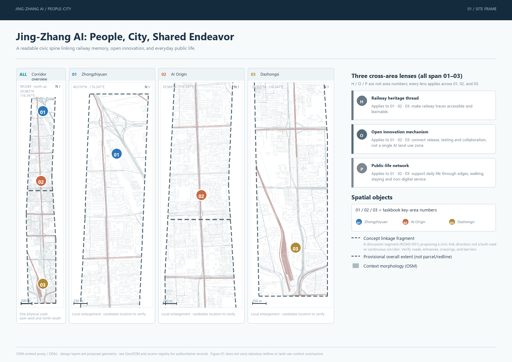
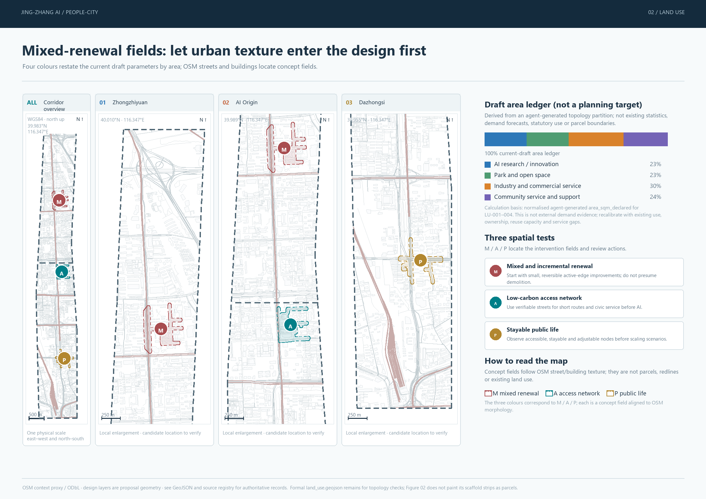
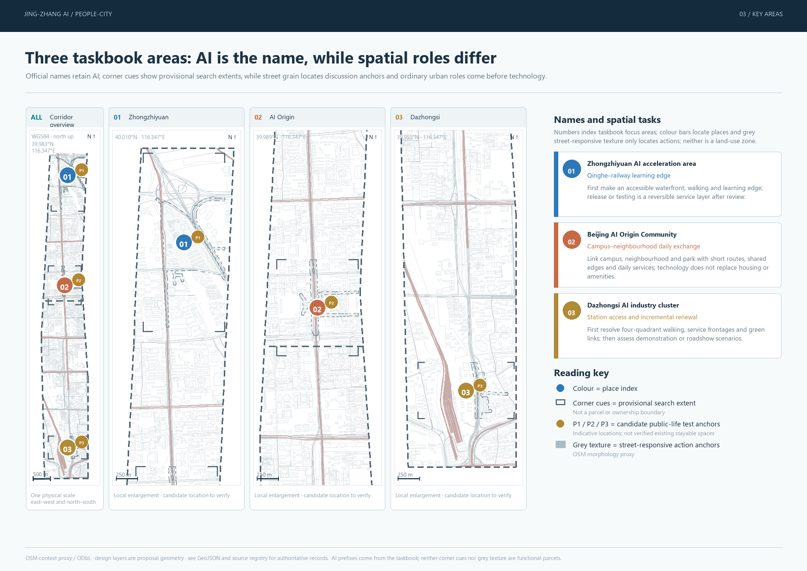
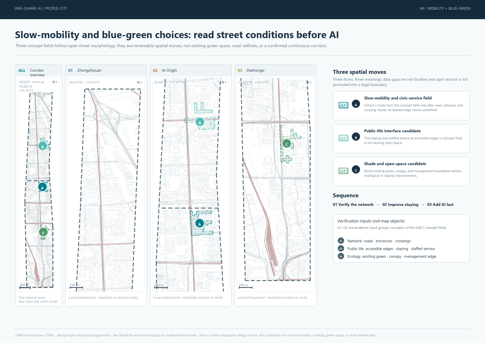
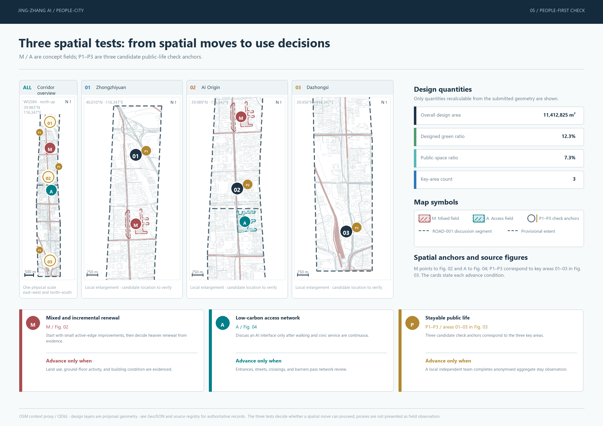

01 / 02 / 03
These are only the three taskbook key-area numbers. H/O/P in Figure 01 are cross-area narrative lenses and form a separate notation.
CENTENNIAL JING-ZHANG AI INNOVATION BELT / URBAN DESIGN PROPOSAL
A public-life spine connects railway heritage, innovation exchange, and daily urban services. AI enters a public trial only when spatial, access, and staffed-service conditions are explicit.
This revision no longer gives districts, corridors, boundaries, land uses, and evidence states one shared color system. Spatial objects use stable line types, fills, and indexing; people-first tests read as design move, spatial location, and review condition. Each of the five figures has one task, and together they form the proposal.
Each figure has its own legend. Colours, letters, and numbers apply only within the scope stated by that figure and do not inherit meanings across figures.
These are only the three taskbook key-area numbers. H/O/P in Figure 01 are cross-area narrative lenses and form a separate notation.
The four colours serve only the draft area ledger, not key areas, corridors, existing uses, or evidence states.
A/B/C belong only to Figure 04's concept fields; M/A/P belong only to the three people-first spatial tests. The two systems are not interchangeable.
A grey dashed line only marks the provisional constraint. It is deliberately downplayed so it cannot be mistaken for an official control line.
Read 01 to 05 in sequence: location, structure, focus, movement, release. Each figure has a dedicated legend, source note, and provisional-boundary status.


area_sqm_declared scaffold areas. They are not demand findings, implementation priorities, planning targets, or existing land use; M/A/P fields follow OSM texture and are not formal parcels or road redlines.


Mixed and incremental renewal, low-carbon access, and stayable public life together determine whether an AI scenario can enter public space.
01 DESIGN MOVE → FIGURE 02
Spatial location: Research, open space, industry service, and community support meet on shared ground-floor edges; repair first, reuse next, then assess addition or reconstruction.
Review focus: Can different users, hours, and ground-floor activities all enter?
02 DESIGN MOVE → FIGURE 04
Spatial location: Walking, cycling, interchange, and crossing gaps organize the civic spine. AI wayfinding can only serve a route confirmed to be safe.
Review focus: Do entrance, crossing, barrier, and closure records support continuous arrival?
P1/P2/P3 CANDIDATE ANCHORS → FIGURE 03
Spatial location: P1/P2/P3 pair with the three focus areas as candidate anchors for future checks of walking, staying, sitting, talking, and staffed service; they are not existing qualifying public spaces.
Review focus: Are accessibility, staying conditions, staffed service, and non-digital alternatives genuinely usable?
These values are recalculated only from the submitted conceptual geometry. They are not official controls or existing-condition survey results.
Spatial proposal, data, and human judgement are not peer objects. They answer in order: what to do, where to do it, and when it may open.
Figures 01 to 04 identify the relationship among key-area numbers, concept intervention fields, candidate check anchors, and provisional extents.
Each AI scenario must state who uses it, who interprets it, and how service continues when an app or automated service fails.
Only when access, public life, data boundaries, and pause conditions are professionally reviewable may a limited, reversible trial begin.
The proposal covers the three-level scope, three key areas, overall spatial structure, walking and cycling, blue-green public space, AI scenarios, and implementation boundary in the taskbook. Deterministic, spatial, visual, and professional-evidence checks are recorded in self_check.json.
Sources include the announcement, taskbook, registered standards, submitted GeoJSON, and OSM/ODbL research context. Official boundaries, controls, traversable network, station entrances, crossings, ground-floor uses, and field observations require confirmation in the next phase; all diagrams retain that limitation.